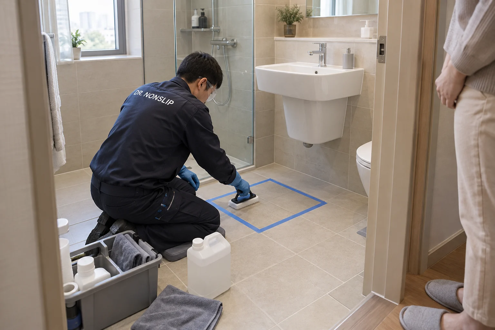

가정 욕실의 미끄럼방지
샤워 후 돌아서는 순간, 세면대 앞에서 옮기는 한 걸음.
부모님과 가족의 욕실 낙상 위험을 줄이기 위해, 매일 쓰는 바닥부터 살펴보세요.

욕실 전체를 바꿔야 할까요?
미끄러운 타일 때문에 욕실 공사까지 고민하고 있다면, 기존 타일의 표면을 처리하는 식각 시공을 먼저 살펴볼 수 있습니다.
시공에 적합한 타일은 철거·교체 없이 활용합니다. 샤워 구역과 세면대 앞처럼 물이 닿는 위치, 가족이 맨발로 걷는 범위에 맞춰 작업합니다.

작은 구역의 변화를 보고 선택하세요.
실제 욕실 타일에 샘플을 시공해 미끄럼 변화와 색·광택을 함께 살펴봅니다. 부모님 댁이라면 평소 미끄러워하는 위치부터 이야기해 주세요.
- 우리 집의 타일
- 재질명을 몰라도 실제 타일의 반응으로 판단합니다.
- 익숙한 욕실의 외관
- 색감과 광택 변화를 보고 본 작업을 결정합니다.
- 가족의 이용 시간
- 작업 중 사용을 제한하고, 마무리 상태에 맞는 이용 시점을 안내합니다.
매일 쓰는 욕실을 위한 선택.
타일을 전부 교체하기 전에, 우리 집 바닥의 샘플로 결정할 수 있습니다. 적절한 관리로 오래 사용하는 표면 시공과 가족의 일상에 맞는 이용 안내를 함께 제공합니다.
배수나 타일 파손이 있는 경우에는 필요한 보수를 별도로 살핍니다. 손잡이 등 보조시설은 이용하는 분의 상태에 맞춰 함께 고려할 수 있습니다.
사진은 공간과 작업을 설명하기 위한 브랜드 이미지입니다.